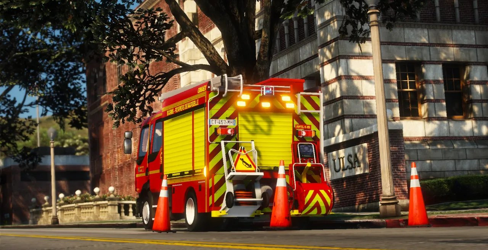
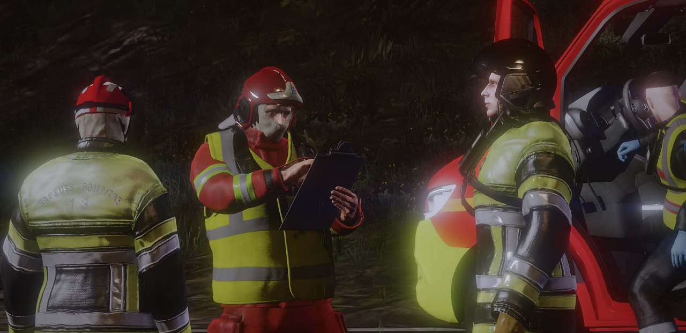
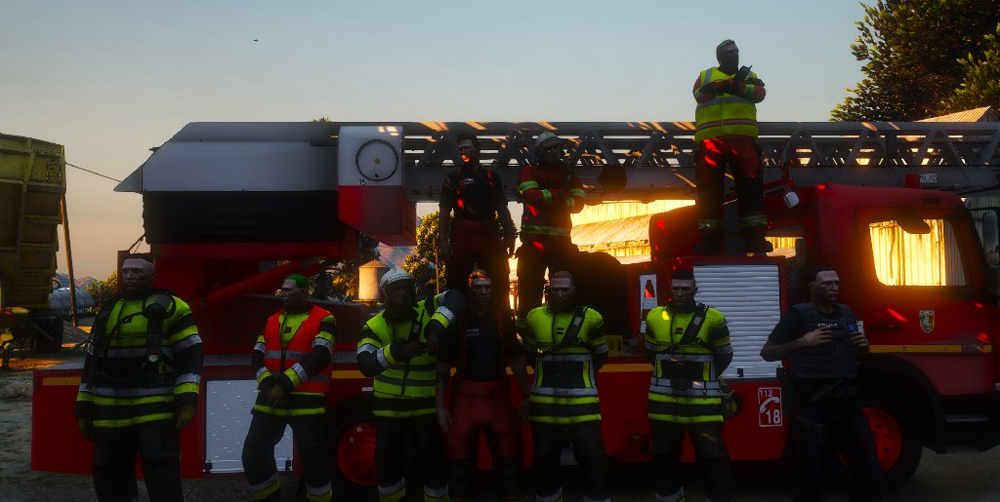
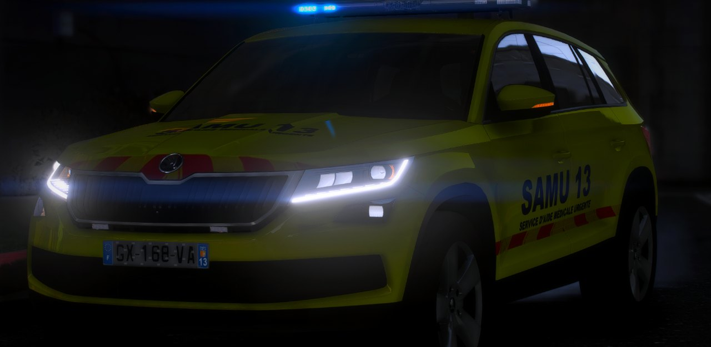
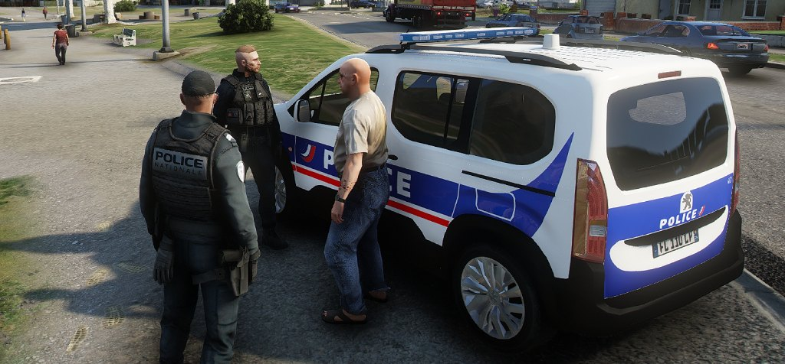
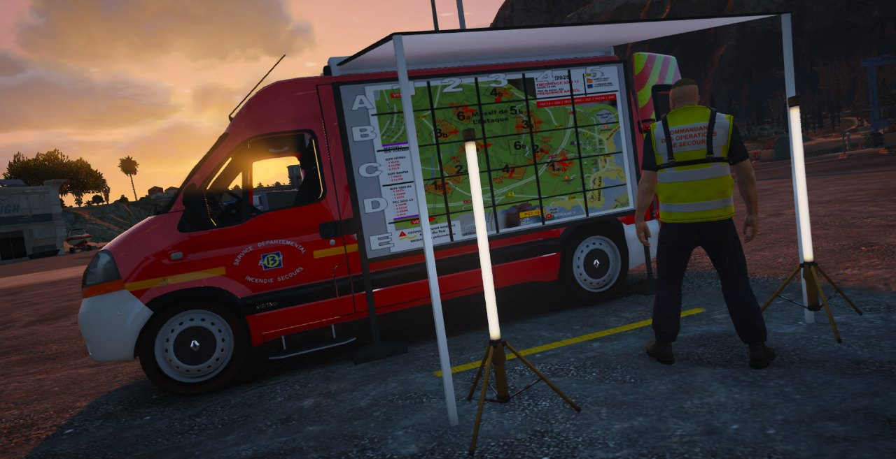

Candidatures ouvertes
Sapeurs-pompiers
SDIS 96
Les sapeurs-pompiers du service départemental d'incendie et de secours de l'Estuaire d'Armor.
Ouverture du serveur lundi 14/09 à 20h00 · Recrutements ouverts Le serveur est ouvert · Recrutements ouverts Postuler
Servir · Protéger · Secourir
Le serveur de simulation FiveM qui vous fait vivre une prise de garde au sein des services de secours français : SAMU, sapeurs-pompiers du SDIS et Police Nationale.
Projet personnel et gratuit · Recrutements ouverts sur Discord
—
Membres sur le Discord
— en ligne
4
Pôles de secours
3 à 4
Sessions par semaine
21h – 0h
Horaires des sessions
Le projet
EAS 96 est un serveur de simulation FiveM sur GTA V. Il reproduit l'action des services de secours français pendant une prise de garde ou une vacation : urgentiste au SAMU, sapeur-pompier au SDIS ou policier de la Police Nationale.

Notre objectif
Notre ambition : faire découvrir les services de secours français à travers une simulation réaliste et poussée. Voici ce qui fait la différence.
Une session réussie reste dans la réalité et ne sort jamais du cadre de la simulation.
Tous les véhicules du serveur ont été réalisés par notre équipe de développement.
Les candidatures sont suivies par pôle, pour que chacun soit bien informé et bien encadré.

Les pôles
Chaque pôle fonctionne de façon indépendante. Ensemble, ils travaillent pour assurer la continuité de la chaîne des secours.

Candidatures ouvertes
Sapeurs-pompiers
Les sapeurs-pompiers du service départemental d'incendie et de secours de l'Estuaire d'Armor.

Candidatures ouvertes
Urgentistes
Les urgentistes du SAMU, rattachés au CHU Montreval.

Candidatures ouvertes
Policiers
Les policiers de la DIDPN Estuaire d'Armor, la direction interdépartementale de la Police Nationale.

Candidatures ouvertes
Opérateurs radio
Les opérateurs radio qui assurent le traitement des appels. Un simple PC suffit pour tenir le poste.
Les attendus
EAS 96 s'adresse aux joueurs qui cherchent une vraie simulation de secours, et à ceux qui veulent évoluer et prendre des responsabilités.
L'âge minimum est fixé à 17 ans, sans aucune dérogation.
Nul besoin d'être du métier : l'équipe vous apporte toutes les connaissances nécessaires.
Chaque pôle assure sa propre formation initiale.
Les qualités indispensables pour faire vivre une simulation réaliste.
Respect des autres joueurs et de la chaîne de commandement.
Un PC qui fait tourner GTA V, ou un simple PC pour un poste d'opérateur radio.
Le recrutement
Les candidatures se déposent sur l'intranet d'EAS 96, avec une simple connexion Discord. Chaque dossier est suivi par le pôle concerné.
17 ans minimum et un PC adapté au poste visé.
Le recrutement se déroule pour l'instant sur le Discord d'EAS 96.
Suivez les instructions : votre candidature est suivie par le pôle choisi.
Chaque pôle assure la formation initiale de ses nouvelles recrues.
Recrutement sur Discord · Candidatures suivies par pôle
Galerie
FAQ
EAS 96 (Estuaire d'Armor Simulation) est un serveur de simulation FiveM sur GTA V. Il reproduit l'action des services de secours français pendant une prise de garde ou une vacation.
Non. EAS 96 est un projet personnel, non immatriculé et entièrement gratuit.
Il y a 3 à 4 sessions par semaine, de 21 h à minuit. Le planning n'est pas encore figé.
Non, aucune expérience réelle n'est demandée. L'équipe apporte toutes les connaissances nécessaires, avec une formation initiale propre à chaque pôle.
L'âge minimum est de 17 ans, sans aucune dérogation.
D'un PC qui fait tourner GTA V. Pour tenir un poste d'opérateur radio, un simple PC suffit.
Non, il est fictif. Tout se passe dans le département inventé du 96, l'Estuaire d'Armor, avec son port, son pont à haubans et sa citadelle.
Rejoindre EAS 96
Le serveur ouvre le 14 septembre 2026. Déposez votre candidature et rejoignez le pôle qui vous correspond.
Ouverture le lundi 14 septembre à 20h00
Le serveur est ouvert !